Physiological Measures
Specifications
Biosignalsplux Hybrid-8 Hub
| Specification | Details |
|---|---|
| Channels | 8 hybrid (digital/analog) channels |
| Can pair up to 2 more hubs for up to 24 channels | |
| Auxiliary Channels | 1 ground + 1 accessory port |
| Connector Type | UC-E6 |
| Sampling Rate | Software configurable from 10 to 3000 Hz |
| Analog sensors: Up to 3000 Hz | |
| Digital sensors: Up to 500 Hz | |
| All sensors share the same sampling rate | |
| Resolution | Software configurable from 8 to 24 bits |
| Analog sensors: Up to 16 bits | |
| Digital sensors: Up to 24 bits | |
| Dimensions | 85 x 54 x 10 mm |
| Weight | 45 g |
| Communication | Dual Bluetooth (Standard Bluetooth + BLE) |
| Standard Bluetooth for Windows, Mac, Linux and Android | |
| Bluetooth Low Energy for iOS | |
| Bluetooth Range | Up to 10 meters in line of sight |
| Internal Memory | 32 GB |
| Battery Type | 700 mA 3.7 V LiPo rechargeable |
| Battery Life | Up to 12 h in continuous streaming |
| Charging Time | 2.5 h |
| Software | OpenSignals (r)evolution - Windows, macOS & Linux |
| OpenSignals Mobile - Android | |
| Software Add-Ons | Heart Rate Variability (HRV) |
| Electromyography (EMG) Analysis | |
| Electrodermal Activity (EDA) Analysis | |
| Respiration Analysis | |
| Video Synchronization | |
| Muscle Load Analysis | |
| Integration | Lab Streaming Layer (LSL) |
| TCP/IP | |
| Data Format | TXT, H5, EDF |
| Accessories | 1x Bluetooth dongle |
| 1x Charger | |
| 1x Portable & rugged storage case | |
| 50x pre-gelled and disposable electrodes | |
| 1x Synchronization Kit (Trigger button, Digital sync cable, LED, Digital port splitter) | |
| User Manual | |
| Repositories | GitHub |
Sensors
| Sensors |
|---|
| Accelerometer (ACC) |
| Electrocardiography (ECG) |
| Electrodermal Activity (EDA) |
| Electromyography (EMG) |
| Inductive Respiration (RIP) |
| Peripheral Capillary Oxygen Saturation (SpO2) |
Accelerometer (ACC)
| Specification | Details |
|---|---|
| Sensor Type | Analog |
| Sensor Technology | MEMS |
| Axes | 3 axes (X, Y, Z) |
| Range | ±3.60 g |
| Bandwidth | 0-50 Hz |
| Minimum Sampling Rate | 100 Hz (to prevent aliasing) |
| Consumption | 0.5 mA |
| Connections | 3 channels (1 for each axis) |
| Calibration | Required (see "Application Notes" in user manual) |
| Cable Length | 100 cm + 8.5 cm for each connector cable |
| User Manual | |
| Datasheet | |
| Sample Data | ZIP |
Electrocardiography (ECG)
| Specification | Details |
|---|---|
| Sensor Type | Analog |
| Gain | 1019 |
| Range | ±1.47 mV (@ VCC = 3 V) |
| Bandwidth | 0.5-100 Hz |
| Minimum Sampling Rate | 200 Hz (to prevent aliasing) |
| Consumption | 0.5 mA |
| Input Impedance | > 100 GΩ |
| CMRR | 100 dB |
| Connections | 1 channel |
| Calibration | Not required |
| Electrode Number | 3x electrodes |
| Electrode Connection Type | Stud connectors (compatible with disposable electodes) |
| Reference Electrode | Included |
| Electrode Placement | Single lead acquisition in Einthoven configurations (see user manual) |
| Cable Length | 100 cm + 30 cm for each electrode cable |
| OpenSignals Add-On | Heart Rate Variability (HRV) |
| User Manual | |
| Datasheet | |
| Sample Data | ZIP |
| Technical Note 1 | |
| Technical Note 2 |
Electrodermal Activity (EDA)
| Specification | Details |
|---|---|
| Sensor Type | Analog |
| Range | 0-25 µS (@ VCC = 3 V) |
| Bandwidth | 0-3 Hz |
| Minimum Sampling Rate | 10 Hz (to prevent aliasing) |
| Consumption | 0.1 mA |
| Input Bias Current | ±70 pA |
| CMRR | 130 dB |
| Current | DC |
| Measurement | Continuous |
| Connections | 1 channel |
| Calibration | Not required |
| Electrode Number | 2x electrodes |
| Electrode Connection Type | Stud connectors, compatible with disposable electodes |
| Reference Electrode | Not required |
| Electrode Placement | Anterior side of two adjacent fingers (see user manual) |
| Cable Length | 100 cm + 5 cm for each electrode cable |
| OpenSignals Add-On | Electrodermal Activity (EDA) Analysis |
| User Manual | |
| Datasheet | |
| Sample Data | ZIP |
Electromyography (EMG)
| Specification | Details |
|---|---|
| Sensor Type | Analog |
| Gain | 1007 |
| Range | ±1.49 mV (@ VCC = 3 V) |
| Bandwidth | 25-500 Hz |
| Minimum Sampling Rate | 1000 Hz (to prevent aliasing) |
| Consumption | 1 mA |
| Input Impedance | > 100 GΩ |
| CMRR | 100 dB |
| Connections | 1 channel |
| Calibration | Not required |
| Electrode Number | 2x electrodes |
| Electrode Connection Type | Stud connectors (compatible with disposable electodes) |
| Reference Electrode | Required |
| Electrode Placement | 2 measuring electrodes must be placed along the muscle and the reference electrode must be placed in a region of low muscular activity (see user manual) |
| Cable Length | 100 cm + 5 cm for each electrode cable |
| OpenSignals Add-On | Electromyography (EMG) Analysis |
| User Manual | |
| Datasheet | |
| Sample Data | ZIP |
| Technical Note |
Inductive Respiration (RIP)
| Specification | Details |
|---|---|
| Sensor Type | Analog |
| Bandwidth | 0.075-1 Hz |
| Minimum Sampling Rate | 10 Hz (to prevent aliasing) |
| Consumption | 1 mA |
| Output | 0-3 V |
| Operating Humidity | 5-95 % (non-condensing) |
| Operating Temperature | 5-40 °C |
| Connections | 1 channel |
| Calibration | Not required |
| Strap Length | 50-110 cm (up to 150 cm when stretched) |
| Strap Placement | Thoracic or abdominal (see PZT user manual) |
| Cable Length | 100 cm |
| OpenSignals Add-On | Respiration Analysis |
| User Manual | No manual for RIP, refer to this PZT manual for "Application Notes": PDF |
| Datasheet | |
| Sample Data | ZIP |
Peripheral Capillary Oxygen Saturation (SpO2)
| Specification | Details |
|---|---|
| Sensor Type | Analog |
| Infrared emitter | Peak emission: 950 nm |
| Centroid wave: 940 nm | |
| Spectral bandwidth: 42 nm | |
| Radiant intensity: 2 mW/sr | |
| Red emitter | Peak emission: 660 nm |
| Centroid wave: 655 nm | |
| Spectral bandwidth: 17 nm | |
| Radiant intensity: 2.6 mW/sr | |
| Detector | Wavelength of max sensitivity: 920 nm |
| Range of sensitivity: 400-1100 nm | |
| Radiant sensitive area: 1.3x1.3 mm | |
| Spectral sensitivity (940 nm): 0.77 A/W | |
| Infrared/Red emitter | Duty cycle: 25 % |
| Min current: 0.20 mA | |
| Max current: 50 mA | |
| Sampling Rate | 500 Hz |
| Connections | 1 channel |
| Calibration | Not required |
| Cable Length | 100 cm |
| OpenSignals Add-On | Heart Rate Variability (HRV) |
| Datasheet | |
| Sample Data | ZIP |
| Technical Note |
Sampling Rate Lookup Table
| Sensor | Minimum Sampling Rate |
|---|---|
| ACC | 100 Hz |
| ECG | 200 Hz |
| EDA | 10 Hz |
| EMG | 1000 Hz |
| RIP | 10 Hz |
| SpO2 | 500 Hz |
If multiple sensors are used, the sampling rate should be at least as high as the highest minimum sampling rate required by any sensor to prevent aliasing in the acquired signals.
Testing Protocols
Accelerometer (ACC)
Work in progress...
Electrocardiography (ECG)
- Preparation
- Set up the appropriate software tools to record and visualize the ECG signal.
- Ensure the ECG sensor is properly calibrated according to the manufacturer’s instructions.
- Instruct the subject to relax and remain still in the seated position throughout the testing procedure to minimize motion artifacts.
- Clean the skin area where the sensor will be attached using an alcohol swab to remove any oil or dirt.
- Properly place the ECG electrodes on the subject's body according to standard electrode placement guidelines (e.g., Lead I configuration).
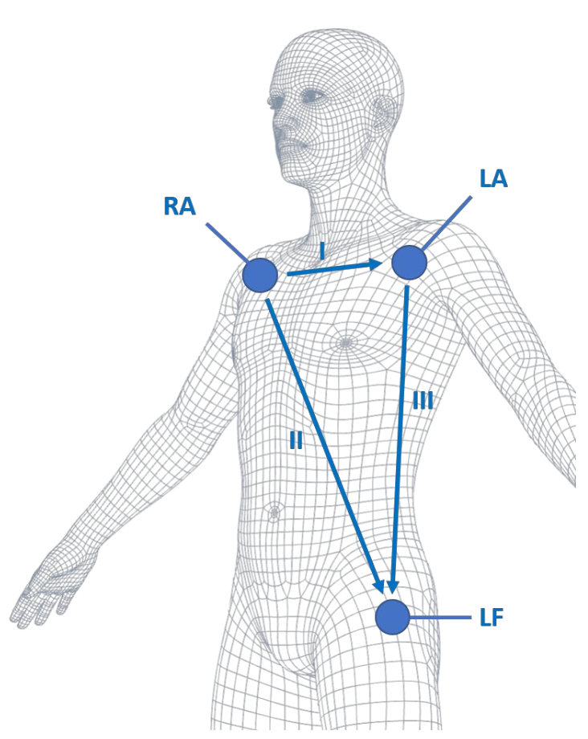
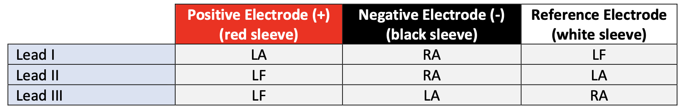
- Baseline Testing
- Record the signal for a fixed period (e.g., 60 seconds).
- Review the recorded baseline ECG signals to ensure clarity, absence of noise, and proper detection of QRS complexes.
- Inspect the signal for any abnormalities (e.g., high-frequency noise, baseline drift, artifacts).
- Dynamic Testing
- Conduct controlled exercise tests (e.g., jumping jacks) to induce physiological changes in heart rate and rhythm.
- Monitor ECG signals during the testing period to assess the sensor's ability to accurately track dynamic changes in cardiac activity.
- Noise and Artifact Assessment
- Instruct the subject to perform controlled movements (e.g., arm swings, deep breathing) or introduce other artifacts (e.g., electrode movement, electrical interference) during ECG recording.
- Assess the impact of artifacts and noise on ECG signal quality and reliability.
- Documentation and Reporting
- Document the results of testing protocol, including baseline measurements, artifact assessment and dynamic testing.
- Summarize key findings regarding signal quality, consistency, and susceptibility to artifacts.
- Provide recommendations for optimizing ECG signal acquisition based on the observed strengths and weaknesses of the sensor. Suggest potential improvements or adjustments to electrode placement, signal processing techniques, or environmental conditions.
- Include any relevant data visualizations, graphs, or tables to support the findings and recommendations.
Electrodermal Activity (EDA)
Work in progress...
Electromyography (EMG)
-
Preparation
- Set up the appropriate software tools to record and visualize the EMG signal.
- Ensure the EMG sensor is properly calibrated according to the manufacturer’s instructions.
- Instruct the subject to relax and remain still in the seated position throughout the testing procedure to minimize motion artifacts.
- Clean the skin area where the sensor will be attached using an alcohol swab to remove any oil or dirt.
- Place the bipolar electrodes over the muscle group you want to test (e.g., biceps). Place the reference electrode to the appropriate location. Refer to SENIAM recommendations for sensor location and placement.
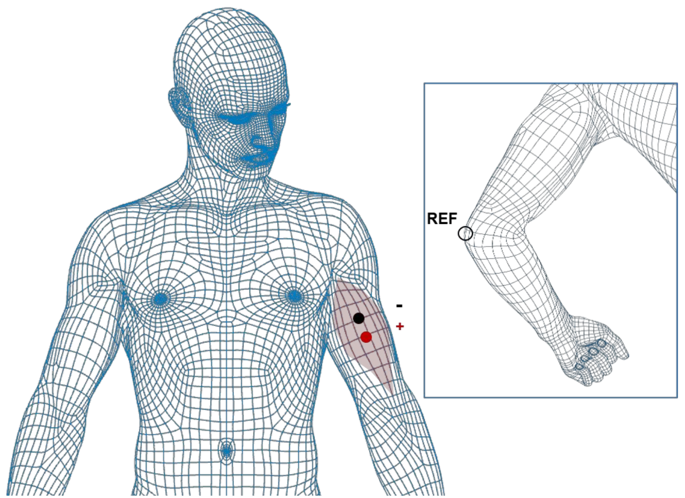
-
Baseline Testing
- Ask the subject to relax the muscle where the sensor is attached.
- Record the signal for a fixed period (e.g., 60 seconds). The signal should be close to zero, indicating no muscle activity.
- Inspect the signal for any abnormalities (e.g., high-frequency noise, baseline drift, artifacts).
-
Muscle Activation Testing
- Instruct the subject to perform a series of controlled muscle contractions and relaxations.
- Ensure that the contractions are performed with consistent effort to avoid sudden changes in signal amplitude.
- Ensure that the EMG sensor captures the full range of muscle activation and accurately reflects the intensity of contraction.
- Take note of the muscle activity parameters, such as amplitude and duration of muscle contractions.
- Repeat the test to compare the characteristics of muscle activity across different recordings to assess signal consistency and reliability.
-
Noise and Artifact Assessment
- Ask the subject to relax the muscle where the sensor is attached.
- Introduce controlled noise or artifacts during EMG signal acquisition (e.g., electrode movement, electrical interference).
- Assess the impact of introduced artifacts on the EMG signal quality.
-
Documentation and Reporting
- Document the results of testing protocol, including baseline measurements, muscle activation tasks and artifact assessment.
- Summarize key findings regarding signal quality, consistency, and susceptibility to artifacts.
- Provide recommendations for optimizing EMG signal acquisition based on the observed strengths and weaknesses of the sensor. Suggest potential improvements or adjustments to electrode placement, signal processing techniques, or environmental conditions.
- Include any relevant data visualizations, graphs, or tables to support the findings and recommendations.
Inductive Respiration (RIP)
-
Preparation
- Set up the appropriate software tools to record and visualize the RIP signal.
- Ensure the RIP sensor is properly calibrated according to the manufacturer’s instructions.
- Instruct the subject to relax and remain still in the seated position throughout the testing procedure to minimize motion artifacts.
- Properly place the strap on the subject's chest along the nipple line, as shown in the figure below:
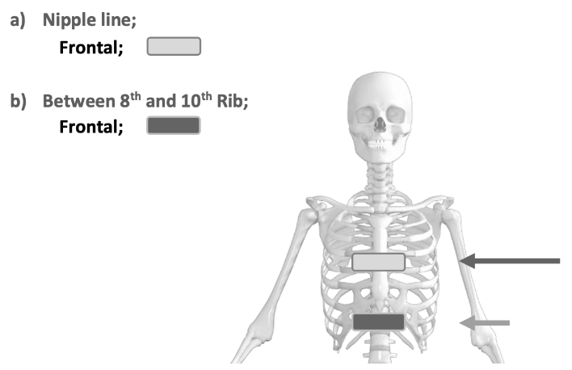
-
Chest Testing
- Record baseline respiratory signals using the RIP sensor for a sufficient duration (e.g., 60 seconds) to establish stable baselines.
- Review the recorded baseline respiratory signals to ensure clarity, absence of noise, and consistent waveform morphology. Verify that the sensor accurately detects respiratory rate and patterns during rest.
- Instruct the subject to perform controlled breathing exercises (e.g., slow deep breathing, rapid shallow breathing) at different respiratory rates and depths. Include respiratory pauses and apnea events followed by normal respiration.
- Assess the sensor’s ability to capture and quantify changes in respiration dynamics.
-
Abdominal Testing
- Change the position of the strap to the subject’s upper abdomen, between 8th and 10th ribs, as shown in the figure above.
- Repeat the steps for chest testing, performing the same breathing exercises. Confirm that the signal recorded in the abdominal configuration presents a larger amplitude than the chest configuration.
-
Dynamic Testing
- Instruct the subject to change body positions (e.g., sitting, standing, lying down) and perform controlled movements (e.g., arm swings, walking, jumping jacks) during RIP signal recording.
- Assess the sensor's ability to accurately capture respiratory signals under different postural and dynamic conditions.
-
Noise and Artifact Assessment
- Introduce noise and artifacts (e.g., strap movement, electrical interference) to simulate conditions that can affect the signal during the recording.
- Assess the impact of artifacts and noise on RIP signal quality and reliability.
-
Documentation and Reporting
- Document the results of testing protocol, including baseline measurements, artifact assessment and dynamic testing.
- Summarize key findings regarding signal quality, consistency, and susceptibility to artifacts.
- Provide recommendations for optimizing RIP signal acquisition based on the observed strengths and weaknesses of the sensor. Suggest potential improvements or adjustments to electrode placement, signal processing techniques, or environmental conditions.
- Include any relevant data visualizations, graphs, or tables to support the findings and recommendations.
Peripheral Capillary Oxygen Saturation (SpO2)
Work in progress...
Software Setup
OpenSignals
-
The software to use the Biosignals Plus is OpenSignals. Go the the following website and download OpenSignals for Windows (64-bit).
-
Once downloaded, open OpenSignals. You will be prompted to enter the activation code. The activation code provide is quite long - make sure to double check your entry!
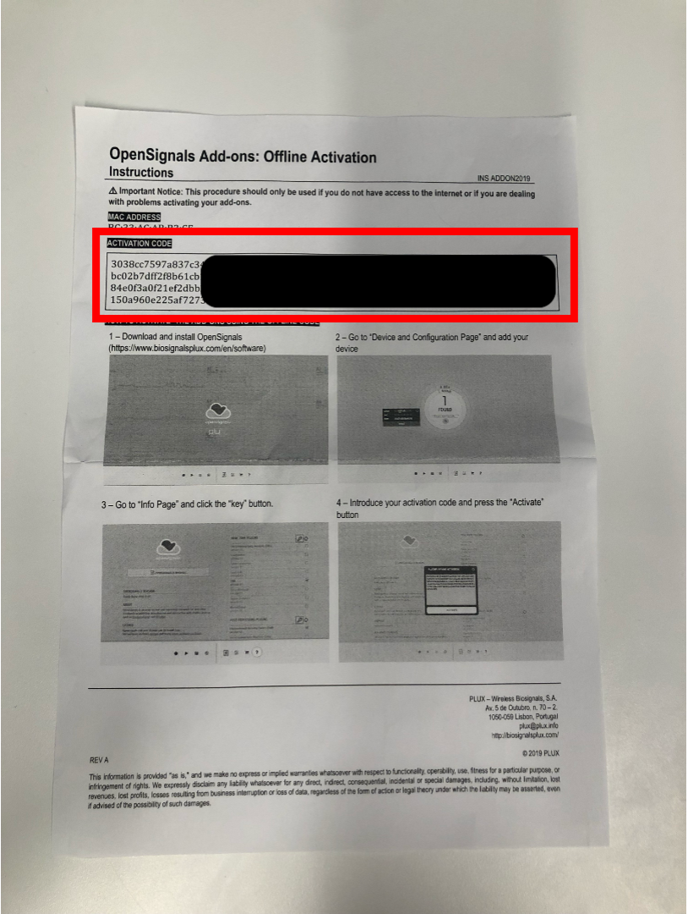 -
This is what the OpenSignals software looks like. OpenSignals Manual is the full manual for the software if you need it.
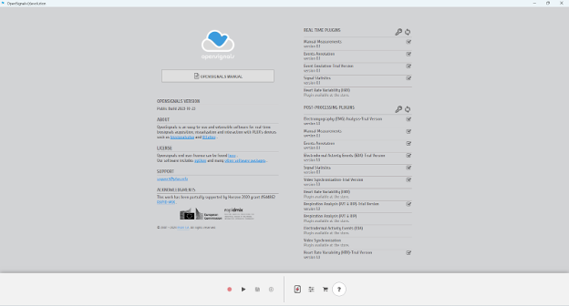
LSL Integration
The OpenSignals software already has LSL integrated, which makes set-up with LSL easy.
-
Open “LabRecorder - Shortcut” on the Desktop. The GUI should look like this:
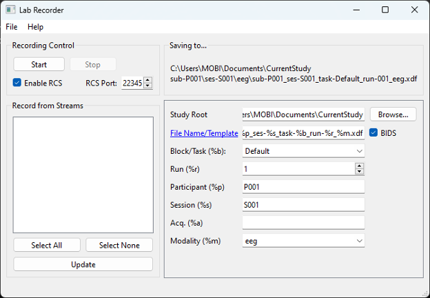 -
Go back to OpenSignals and click on the icon with 3 lines (see below):
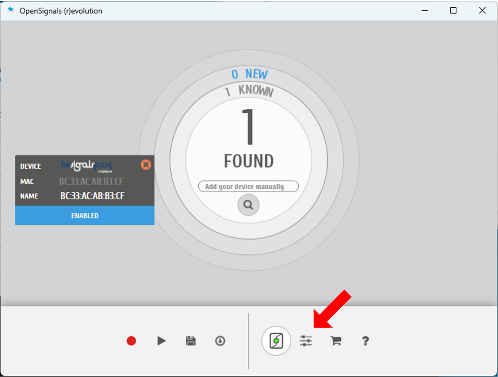 -
Click on the “Integration” tab on the far right. Check the box “Lab Streaming Layer” and “Continuous Mode”:
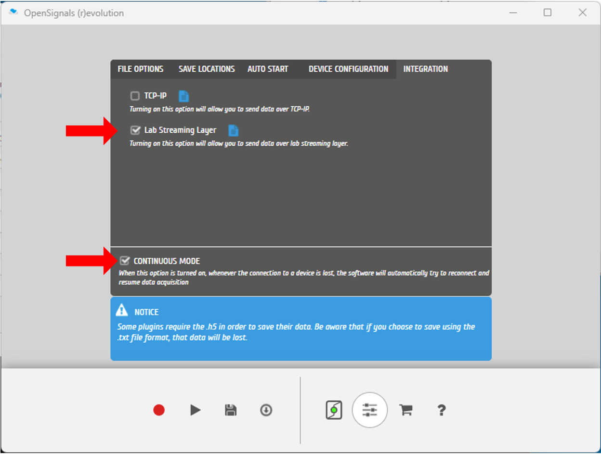 -
Next, click the red record button in OpenSignals. You don’t need to do anything else once you click the red record button:
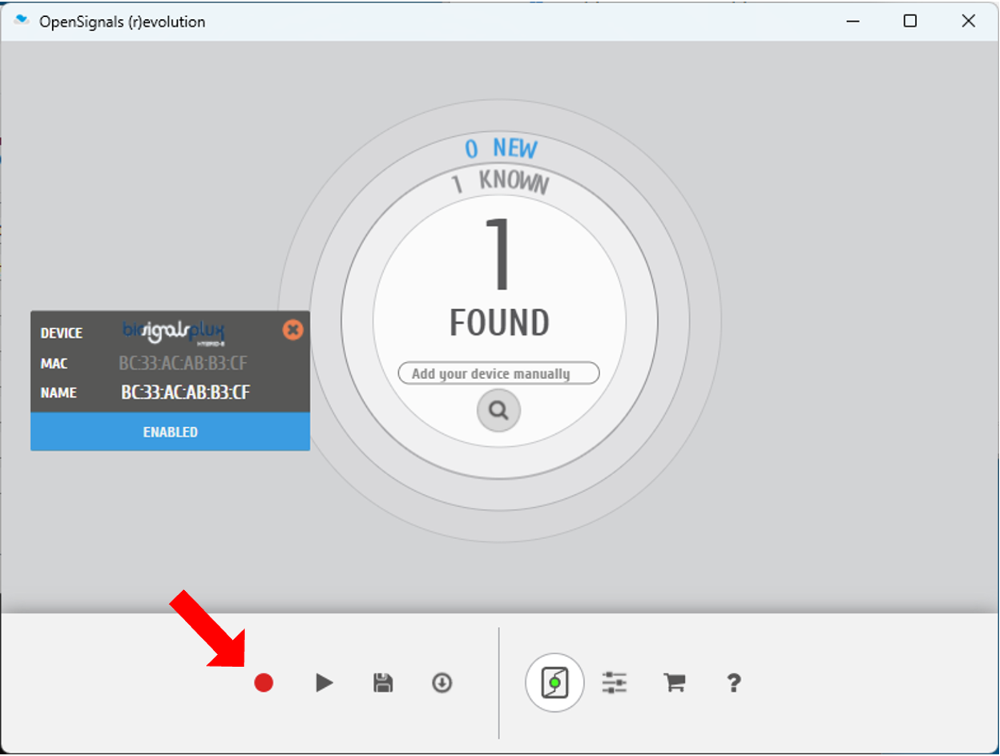 -
Return to LabRecorder. Click “Update” on the bottom left. OpenSignals will then show up under “Record from Streams”.
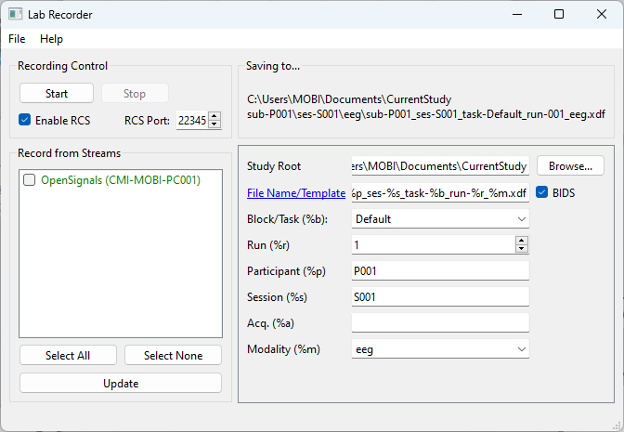